Game of Thones (GoT)

Sinopse
Situada nos continentes fictícios de Westeros e Essos, a série apresenta um enredo de alianças e conflitos entre famílias nobres
dinásticas dos Sete Reinos, que competem para reivindicar o imperioso Trono de Ferro ou lutam para não serem governados por quem
o possui.
Personagens
- Jaime Lannister (Nikolaj Coster-Waldau)
- Catelyn Stark (Michelle Fairley)
- Cersei Lannister (Lena Headey)
- Daenerys Targaryen (Emilia Clarke)
- Jon Snow (Kit Harington)
- Sansa Stark (Sophie Turner)
- Arya Stark (Maisie Williams)
- Robb Stark (Richard Madden)
- Tyrion Lannister (Peter Dinklage)
- Joffrey Baratheon (Jack Gleeson)
Top 10 Melhores Episodios
- The Rains of Castamere (3X09)
- The Winds of Winter (6X10)
- The Laws of Gods and Men (4X06)
- The Mountain and the Vipe (4X08)
- Winter Is Coming (1X01)
- Battle of the Bastards (6X09)
- Baelor (1X09)
- The Door (6X05)
- Hardhome (5X08)
- The Lion and the Rose (4X02)
Fotos
 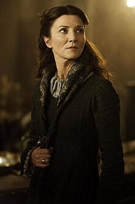
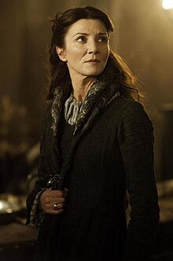

 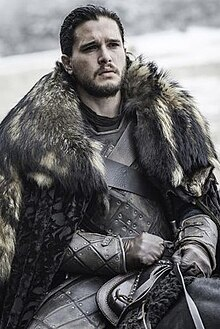
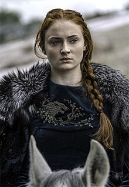
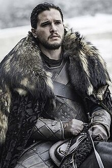
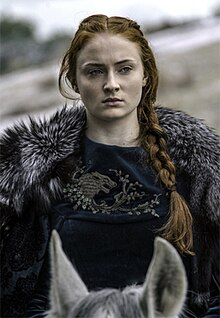
 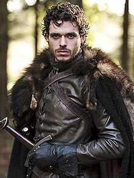
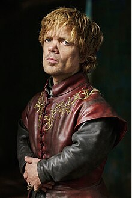
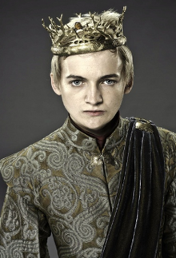
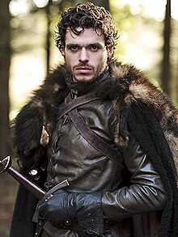
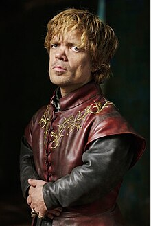
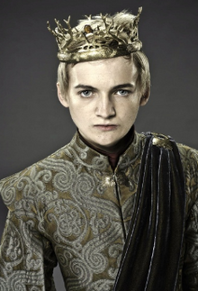